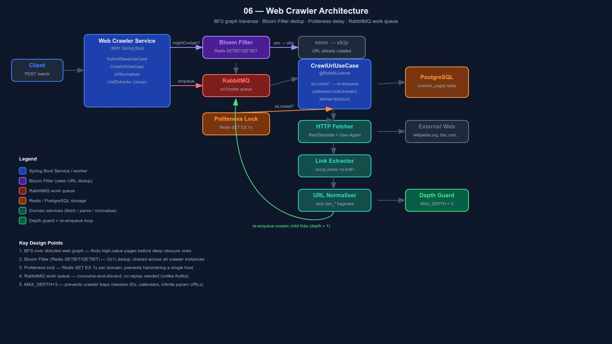

BFS · Bloom Filter · Politeness Delay · URL Normalisation
Starts from seed URLs, fetches pages, extracts links, recursively crawls those links.
The web is a cyclic directed graph. Every design decision here is about graph traversal at scale.
Program that browses the web automatically. Start at some pages, read them, find links, follow links, repeat forever.
Library = internet. Books = web pages. References = hyperlinks.
Starting point. The crawler has no idea where to begin until you give it one.
seeds = [ "https://wikipedia.org", "https://bbc.com", "https://github.com" ]
From 3 seeds → hundreds → thousands → millions. The whole web is reachable.
a→b→a loops forever without deduplicationThe web is a directed graph. BFS processes all neighbours before going deeper.
Level 0: wikipedia.org Level 1: history.com, bbc.com, github.com Level 2: archives.gov, reuters.com, ... → Important pages found first → Popular = shallow = found early
wikipedia.org
→ history.com
→ archives.gov
→ deeper...
→ even deeper...
(1000 obscure pages before touching bbc.com)
Risk: dive deep into a crawler trap before visiting important pages.
frontier = Queue([seed_urls])
seen = BloomFilter()
while frontier not empty:
url = frontier.dequeue()
if seen.mightContain(url):
continue // already visited
seen.add(url)
html = fetch(url) // HTTP GET
links = extract(html)
for link in links:
norm = normalise(link)
if not seen.mightContain(norm):
seen.add(norm)
frontier.enqueue(norm)
store(url, html) // save to DB
Crawling bbc.com with 1000 concurrent threads = DDoS attack. Real crawlers enforce a per-domain delay.
// After fetching bbc.com/news: SET crawl:lock:bbc.com "" EX 1 // key expires in 1 second // Next bbc.com URL dequeued: EXISTS crawl:lock:bbc.com → true → re-enqueue, skip for now
Redis TTL = automatic expiry. No cron job needed.
Sites that generate infinite unique URLs:
// Session ID trap /news?session=abc123 /news?session=def456 ← same page, different URL // Calendar trap /calendar/2024/01 /calendar/2024/02 ... /calendar/9999/12 ← infinite // Tracking params /article?utm_source=twitter /article?utm_source=facebook ← same page
#section)utm_*, fbclid)| Feature | Kafka | RabbitMQ |
|---|---|---|
| Message replay | ✅ Yes | ❌ No |
| Message ordering | ✅ Per partition | Approximate |
| Retention | Days/weeks | Until consumed |
| Throughput | Millions/sec | Thousands/sec |
| Complexity | High | Low |
| Use case | Event sourcing, audit log | Work queue |
RabbitMQ is purpose-built for exactly this. One URL processed by exactly one worker. ACK on success. NACK on failure → DLQ.
Kafka = freight train. Great for large volumes with guaranteed delivery history.
RabbitMQ = delivery van. Gets the package there. Once delivered, it is gone.
Using Kafka here = freight train to deliver one pizza.
Same pattern as project 05. Domain knows nothing about Spring, Redis, RabbitMQ, or HTTP.
In project 05, the use case was called directly by the controller. Here, CrawlUrlUseCase is also triggered by RabbitMQ messages — Spring calls it automatically when a URL arrives in the queue.
// Infrastructure adapter wires
// use case to RabbitMQ consumer
@RabbitListener(queues = "url.frontier")
public void onMessage(CrawlUrl crawlUrl) {
crawlUrlUseCase.crawl(crawlUrl);
}
Use case itself has no RabbitMQ imports. Spring wiring in infrastructure only.
More ports = more moving parts = more opportunities to learn the pattern. Each port can be swapped independently — e.g. replace Redis Bloom Filter with Guava in-memory for tests.
| Decision | Choice | Why |
|---|---|---|
| Traversal | BFS | Finds important pages first; DFS risks trap dive |
| URL dedup | Bloom Filter (Redis) | O(1) probabilistic; shared across workers; 1.2MB |
| Work queue | RabbitMQ | Work queue pattern; no replay needed; simpler than Kafka |
| Politeness | Redis SET EX | Per-domain TTL lock; atomic, expires automatically |
| HTML parsing | Jsoup | Purpose-built; handles malformed HTML gracefully |
| Max depth | 3 hops | Prevents traps; configurable via application.yml |
| URL normalise | strip fragment + tracking | Collapse duplicate URLs before Bloom Filter check |
docker-compose up -d # RabbitMQ management UI: open http://localhost:15672 # login: guest / guest
JAVA_HOME=/usr/lib/jvm/java-21-openjdk-amd64 \ mvn test -f backend/pom.xml
JAVA_HOME=/usr/lib/jvm/java-21-openjdk-amd64 \ mvn spring-boot:run \ -f backend/pom.xml \ -pl web-crawler-service
# Submit seed URLs
curl -X POST http://localhost:8080/api/v1/seeds \
-H "Content-Type: application/json" \
-d '{"urls":["https://wikipedia.org"]}'
# Check crawl status
curl http://localhost:8080/api/v1/status
# Response:
# { "pagesCrawled": 42, "queueDepth": 318 }
Full system view — components, data flows, and design decisions
